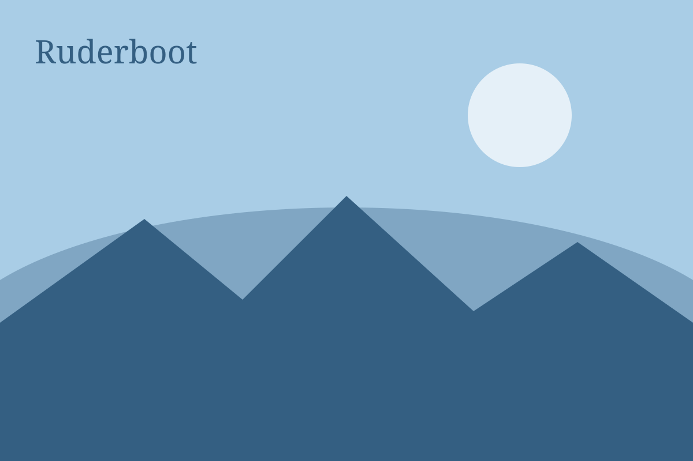
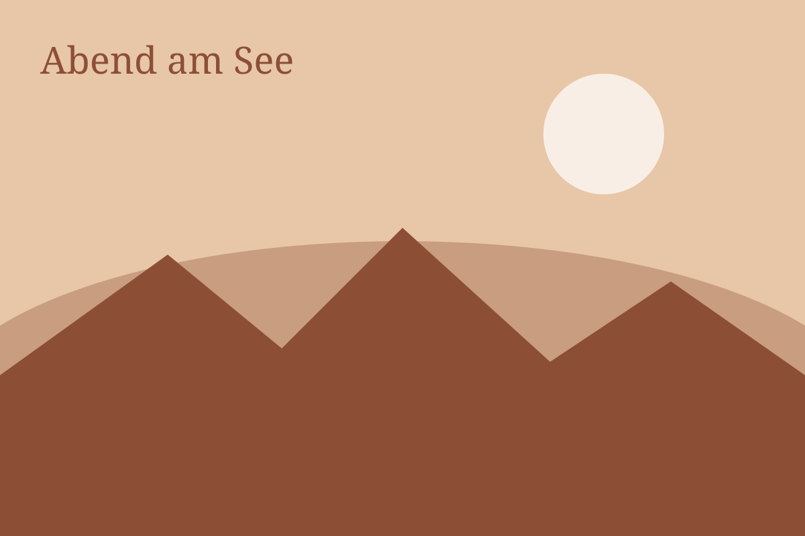

Rund um den See
Der Chiemsee ist groß genug für zwei Wochen und klein genug, um ihn an einem Tag zu umrunden.
Die Inseln
Von Prien fährt der Dampfer zur Herreninsel mit dem Schloss und weiter zur Fraueninsel mit dem Kloster. Wer den frühen Dampfer nimmt, hat die Fraueninsel eine Stunde für sich. Die Fischräucherei öffnet um zehn.

Die Berge
Die Kampenwand ist der Hausberg. Mit der Bahn hinauf, zu Fuß hinunter, oder umgekehrt, wenn die Knie es erlauben. Oben gibt es Kaspressknödel und einen Blick bis Salzburg. Wer mehr will, nimmt den Hochries oder die Hochplatte.
Baden
Unser Steg ist die kürzeste Badestelle. Schöner noch ist die Bucht bei Gstadt, wo das Wasser im August 24 Grad hat. Mit dem Rad sind es vierzig Minuten am Ufer entlang.

Essen
- Fischerstüberl in Gstadt: Renke vom See, Tische am Wasser.
- Alte Post in Prien: bayerisch, groß, laut, gut.
- Klosterwirt auf der Fraueninsel: Brotzeit unter Kastanien.